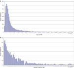
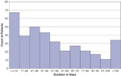

Introduction
Parenteral nutrition (PN) is an integral aspect of neonatal intensive care, and can be life saving for critically ill neonates who are unable to receive adequate nourishment enterally.1, 2 However, PN can lead to the untoward outcome of PN-associated liver disease (PNALD), particularly when it is administered for many weeks.3, 4
Reducing the incidence or severity of PNALD would be an advance in neonatal intensive care. However, to date, studies testing prophylactic strategies have not identified a consistently successful method, other than discontinuing the PN, which frequently is not a feasible option. Those studies included prophylactic administration of taurosusodeoxycholic acid,5 cholecystokinin-octapeptide,6, 7 taurine,8 phenobarbitol9 and removing copper and manganese from the PN.10, 11
One problem inherent in any prophylactic strategy in the NICU is accurately predicting which neonates are at highest risk for developing the adverse outcome, so that high-risk patients can be eligible for study while low-risk patients can be excluded. Indeed, in the first days of life, when a prophylactic treatment to prevent PNALD might be started, it is not clear how to identify the neonates receiving PN who are at highest risk of developing PNALD. One problem in devising risk-assessment tools for PNALD is that in any given NICU, PNALD is rare. Therefore, for a series of patients to be sufficiently large to devise a meaningful risk assessment, single institutions must report their incidence of PNALD over decades. However, changes over time, in PN constituents, concomitant medications, equipment and other aspects of NICU care, can confound the interpretation of long-term chronological reports.
We sought to assess the occurrence of PNALD in a contemporary group of neonates cared for within Intermountain Healthcare, a large healthcare delivery system in the western United States. We studied all neonates in this system with dates of birth from 1 January, 2002 through 30 June, 2006, who received at least 14 days of PN. We hypothesized that this information would help us focus new experimental strategies for preventing PNALD, such as Omegaven use,12, 13, 14, 15, 16 on patients at highest risk for developing PNALD.
Methods
Data were collected as a deidentified limited data set from archived Intermountain Healthcare records. The information collected was limited to the information displayed in the tables and figures of this report. Data were obtained for patients admitted to the NICU at McKay-Dee Hospital (Ogden, UT, USA), LDS Hospital (Salt Lake City, UT, USA), Primary Children's Medical Center (Salt Lake City, UT, USA), and Utah Valley Regional Medical Center (Provo, UT, USA) with a date of birth from 1 January, 2002 through 30 June, 2006. We studied only patients who received 14 days or more of PN and who survived at least 28 days or were discharged home before 28 days. PN was defined as an amino acid containing, multivitamin containing, intravenous solution ordered on the Intermountain Healthcare 'Parenteral Nutrition Program' and prepared by the hospital pharmacy PN team.
The program used for data collection was a modified subsystem of 'clinical workstation'. 3M Company (Minneapolis, MN, USA) approved the structure and definitions of all data points for use within the program. Data were collected from the electronic medical record, case mix, pharmacy and laboratory systems. Trained and designated clinical personnel enter and access data. Medical records (paper charts) were reviewed for all patients who received PN for 14 days or more and subsequently died. Evidence of PNALD was sought from autopsy findings17, 18 and from death summaries. In each death of a patient where a direct bilirubin >2.0 mg/dl was found, we also determined whether the direct bilirubin was increasing or decreasing in the weeks immediately preceding death. The Intermountain Healthcare Institutional Review Board approved the study.
Descriptive statistics were calculated using Statit (Corvallis, OR, USA). A logistic regression model was developed in Statit to calculate ORs. It calculates maximum likelihood fitting of regression where the response is a binomial variable, using the logistic (logit) model. Parameter estimates are presented on the anti-logarithmic scale. Proportions were compared between groups using 2 tests with Yate's continuity correction or, when counts were small, Fisher's exact test. Two-tailed tests were used, and for all tests was set at 0.05.
Results
Between 1 January, 2002 and 30 June, 2006, 9861 neonates were cared for in four Intermountain Healthcare NICUs. Of these, 9547 (96.8%) were alive 28 days after birth or were discharged home before that day. Of these 9547 'survivors', 6543 (68.5%) received PN. The number of days PN was administered to each of these patients is shown in Figure 1. Seventy-nine percent of those receiving PN received it for 13 days or fewer; conversely, 21% (1366 patients) of those receiving PN received it for 14 days or more. These 1366 patients, shown in Figure 1b, are the basis of this report. These patients generally received intravenous lipid preparation up to 3 g/kg/day as part of the PN. One hundred and forty-seven patients (2.2 %) received PN for 50 days or more and 14 patients (0.2%) received PN for 100 days or more. One received PN for 179 days.
Figure 1.
Number of days PN was administered. (a) The number of days is shown for each of 6543 NICU patients received PN. (b) More details of the 1366 patients who received PN for 14 days or more. Only patients who survived at least 28 days are included.
Full figure and legend (168K)Table 1 categorizes the 1366 patients who received PN for 14 days according to their birth weight and whether they had surgery or extracorporeal membrane oxygenation. The majority (75%, 1022/1366) of those who received PN for 14 days were neonates 750 g who did not have surgery. However, the groups with the highest probability of receiving PN for >28 days were neonates <750 g (66%; 111/167), those with necrotizing enterocolitis (NEC) who underwent surgery (75%; 9/12), those with omphalocoele (54%; 6/11), jejunal atresia (59%; 13/22) or treated with extracorporeal membrane oxygenation (67%; 20/30). The groups with the highest probability of receiving PN for over 8 weeks (56 days) were those with NEC treated with laparotory (33%; 3/9), those with jejunal atresia (32%; 7/22), preterm infants <750 g birth weightt (19%; 32/167) and those with gastrochisis (15%; 13/86). We found no effect of gender or race on likelihood of developing PNALD.
The great majority (93%) of the neonates who received PN for 14 days had multiple direct bilirubin values recorded. Twenty-eight percent (357/1266) had one or more direct bilirubin measurements 2.0 mg/dl. Table 2 shows the percentage of patients who developed a direct bilirubin 2.0 mg/dl as related to the categories in Table 1. As the number of days on PN increased, the incidence of a direct bilirubin 2.0 mg/dl increased. When all patient groups were considered together, those who received PN for 14–28 days had a 14% incidence (125/894) of developing a high direct bilirubin, those receiving PN for 29–56 days had a 43% incidence (164/382), those receiving PN for 57–100 days had a 72% incidence (68/94) and those receiving PN for >100 days had a 86% incidence (12/14). The duration of the direct hyperbilirubinemia (Figure 2) ranged from fewer than 10 days to more than 440 days.
Figure 2.
Duration of the direct hyperbilirubinemia. The number of days is shown between the first detection of an elevated direct bilirubin (>2.0 mg/dl) and the decrease to <1.0 mg/dl. Included are NICU patients who were treated for >14 days with PN and survived at least 28 days after birth.
Full figure and legend (66K)Table 2 - Percent of patients receiving PN for >14 days who developed a direct bilirubin >2.0 mg/dl.
![Table 2 - Percent of patients receiving PN for >14 days who developed a direct bilirubin >2.0[thinsp]mg//dl - Unfortunately we are unable to provide accessible alternative text for this. If you require assistance to access this image, please contact help@nature.com or the author](table_thumb.gif) Full table
Full table Outcomes of the 1366 neonates who received PN for 14 days and survived at least 28 days are shown in Table 3. Patient groups with the highest direct bilirubin concentrations also had the highest alkaline phosphatase, the highest serum glutamic pyruvic transaminase and the highest serum glutamic oxaloacetic transaminase values recorded. Patients who received PN for 14 days but whose direct bilirubin never exceeded 0.9 mg/dl had a mortality rate of 3%. However, those whose direct bilirubin was 1.0 mg/dl had a 9% mortality rate (P<0.00001). Those with a direct bilirubin 11 mg/dl had a 26% mortality rate (P<0.00001 vs those with a bilirubin <11 mg/dl).
Table 3 - Survival rates of NICU patients who received PN for 14 days, as related to their highest recorded direct bilirubin concentration.
Full table Seventy-one patients received PN for 14 days and subsequently died 28 days later. We sought to determine whether any of these 71 had PNALD, and if so whether it was improving or progressing (worsening) immediately before their death. Thirty patients who died had no evidence of PNALD, as they had no direct bilirubin measurement in excess of 2.0 mg/dl (Table 3). The remaining 41 all had a direct bilirubin exceeding 2.0 mg/dl. None of these 41 had PNALD listed as the sole cause of death in the autopsy report or death summary. However, 32 of the 41 (73%) had PNALD identified as an active, progressing problem at the time of death.
Estimates of the odds of developing PNALD, depending on birth weight and surgical condition, are shown in Table 4. The highest odds occurred among those weighing <750 g at birth, those who developed NEC and subsequently received surgery (either laparotomy or drain) and those with gastrochisis or jejunal atresia. When examined from the standpoint of which groups of patients, identifiable on the first day of life, were most likely to develop PNALD if they survived for >28 days, the following risks were calculated: (1) patients weighting <750 g birth weight had a 39% likelihood of developing PNALD, (2) patients with gastrochisis had a 43% likelihood of developing PNALD and (3) patients with jejunal atresia had a 64% likelihood of developing PNALD.
Table 4 - Logistic regression analysis, deriving odds ratios for developing PNALD, using the birth weight categories and surgical conditions as independent variables.
Full table Discussion
When a neonate receives PN for many weeks, PNALD commonly develops. Kobuta et al.19 reported that, in their experience all neonates receiving PN for over 8 weeks develop PNALD; defining PNALD as a direct bilirubin 2.0 mg/dl. In the present study we observed a slightly lower incidence, of 76%, among 108 neonates who received PN for 8 weeks or more.
PNALD can be a lethal complication. Wales et al.20 reported that PNALD has a disease-associated mortality rate of 3–13%. Various other reports indicate that the mortality rate of neonates with PNALD approaches 100%, if they are unable to be weaned off PN or if they fail to receive a liver/small bowel transplant.17, 18 We observed that among 71 neonates who received PN for 14 days and subsequently had a late (>28 days) death PNALD was generally a problem and remained so at the time of death. However, it is not clear to what extent the PNALD actually contributed to the mortality. Certainly, the incidence of late death was higher among those with the highest direct bilirubin concentrations.
It has been postulated that PNALD is due, at least in part, to the lipid portion of PN, and that a lipid product high in omega-3 fatty acids produced from fish oil rather than soybean oil would lead to a lower incidence.14, 15, 21 One such product, Omegaven (Fresenius Kabi AG, Bad Homburg, Germany), has been administered to two neonatal patients with PNALD, in a recent report, with excellent success in reversing the process.14 Gura et al.14 in reporting this encouraging experience called for randomized controlled trials testing lipid preparations that are high in omega-3 vs standard lipid preparations, as a means of preventing PNALD. We agree with this suggestion, adding that some of these prevention trials should focus on NICU patients who are at a very high risk of developing PNALD. In this way, neonates eligible for the study would be those with the most to gain from participating, whereas those with the least to gain would be excluded and therefore not be exposed to any potentially harmful effects of the test preparation.
It is challenging to predict, on the first day of life, which NICU patients will go on to develop PNALD. Nevertheless, attempting to identify these high-risk patients prospectively would be very useful. Our present data suggest that groups at highest risk are those born weighing <750 g and those with gastrochisis or jejunal atresia. Certainly, neonates with a variety of surgical conditions including midgut volvulus are at risk for developing PNALD, but perhaps not quite at as high a risk as those in the three groups mentioned.
Certain neonatal patients, not identifiable on the first day of life might also be good candidates for studying fish oil-based intravenous emulsions later during their hospital course. These groups would include patients who develop surgical NEC and are left with short remnant bowel length, because their odds of developing PNALD are very high.20 On the basis of the findings of the present study, we suggest that randomized trials to evaluate Omegaven or other potential means of preventing PNALD, where enrollment is to begin in the first days of life, should seek to enroll patients <750 g birth weight, or with gastrochisis or jejunal atresia. It appears that these groups are the most likely identifiable on the first day of life, to go on to develop PNALD. Therefore these patients are likely to accrue the benefits of successful PNALD prevention trials.
References
- Thureen PJ, Hay Jr WW. Early aggressive nutrition in preterm infants. Semin Neonatol 2001; 6: 403–415. | Article | PubMed | ChemPort |
- Ziegler EE, Thureen PJ, Carlson SJ. Aggressive nutrition of the very low birthweight infant. Clin Perinatol 2002; 29: 225–244. | Article | PubMed |
- Teitlebaum DH. Parenteral nutrition-associated cholestasis. Curr Opin Pediatr 1997; 9: 270–275. | Article | PubMed |
- Kelly DA. Intestinal failure-associated liver disease: what do we know today? Gastroenterology 2006; 130(2 Suppl 1): S70–S77. | Article | PubMed | ChemPort |
- Heubi JE, Wiechmann DA, Creutzinger V, Setchell KD, Squires Jr R, Couser R et al. Tauroursodeoxycholic acid (TUDCA) in the prevention of total parenteral nutrition-associated liver disease. J Pediatr 2002; 141: 237–242. | Article | PubMed | ChemPort |
- Teitelbaum DH, Tracy Jr TF, Aouthmany MM, Llanso A, Brown MB, Yu S et al. Use of cholecystokinin–octapeptide for the prevention of parenteral nutrition-associated cholestasis. Pediatrics 2005; 115: 1332–1340. | Article | PubMed |
- Tietelbaum DH, Han-Markey T, Drongowski RA, Coran AG, Bayar G, Geiger JD et al. Use of cholecystokinin to prevent the development of parenteral nutrition-associated cholestasis. JPEN J Parenter Enteral Nutr 1997; 21: 100–103. | PubMed |
- Spencer AU, Yu S, Tracy TF, Aouthmany MM, Llanos A, Brown MB et al. Parenteral nutrition-associated cholestasis in neonates: multivariate analysis of the potential protective effect of taurine. JPEN J Parenter Enteral Nutr 2005; 29: 337–343. | PubMed | ChemPort |
- Gleghorn EE, Merritt RJ, Subramanian N, Ramos A. Phenobarbital does not prevent total parenteral nutrition-associated cholestasis in noninfected neonates. JPEN J Parenter Enteral Nutr 1986; 10: 282–283. | PubMed | ChemPort |
- Blaszyk K, Wild PJ, Olivera A, Kelly DG, Burgart LJ. Hepatic copper in patients receiving long-term total parenteral nutrition. J Clin Gastroenterol 2005; 39: 318–320. | Article | PubMed |
- Yip YY, Lim AK, Tan KL. A multivariate analysis of factors predictive of parenteral nutrition-related cholestasis (TPN cholestasis) in VLBW infants. J Singapore Paediatr Soc 1990; 32: 144–148. | PubMed | ChemPort |
- Van Aerde JE, Duerksen DR, Gramlich L, Meddings JB, Chan G, Thomson AB et al. Intravenous fish oil emulsion attenuates total parenteral nutrition-induced cholestasis in newborn piglets. Pediatr Res 1999; 45: 202–208. | Article | PubMed | ChemPort |
- Alwayn IP, Gura K, Nose V, Zausche B, Javid P, Garza J et al. Omega-3 fatty acid supplementation prevents hepatic steatosis in a murine model of nonalcoholic fatty liver disease. Pediatr Res 2005; 57: 445–452. | Article | PubMed | ChemPort |
- Gura KM, Duggan CP, Collier SB, Jennings RW, Folkman J, Bistrian BR et al. Reversal of parenteral nutrition-associated liver disease in two infants with short bowel syndrome using parenteral fish oil: implications for future management. Pediatrics 2006; 118: e197–e201. | Article | PubMed |
- Gura KM, Parsons SK, Bechard LJ, Henderson T, Dorsey M et al. Use of a fish oil-based lipid emulsion to treat essential fatty acid deficiency in a soy allergic patient receiving parenteral nutrition. Clin Nutr 2005; 24: 839–847. | Article | PubMed | ChemPort |
- Marcus AD. A doctor's push for drug pits him against its maker. T Wall Street J 2006; 248: 1–15.
- Mullick FG, Moran CA, Ishak KG. Total parenteral nutrition: a histopathologic analysis of the liver changes in 20 children. Mod Pathol 1994; 7: 190–194. | PubMed | ChemPort |
- Zambrano E, El-Hennawy M, Ehrenkranz RA, Zelterman D, Reyes-Mugica M. Total parenteral nutrition induced liver pathology: an autopsy series of 24 newborn cases. Pediatr Dev Pathol 2004; 5: 425–432. | Article |
- Kobuta A, Yonekura T, Oyanagi H, Kawahara H, Yagi M et al. Total parenteral nutrition-associated intrahepatic cholestasis in infants: 25 years' experience. J Pediatr Surg 2000; 35: 1049–1051. | Article | PubMed |
- Wales PW, de Sliva N, Kim JH, Lecce I, Sandhu A, Moore AM. Neonatal short bowel syndrome: a cohort study. J Pediatr Surg 2005; 40: 755–762. | Article | PubMed |
- Weinberger B, Watorek K, Strauss R, Witz G, Hiatt M, Hegyi T. Association of lipid peroxidation with hepatocellular injury in preterm infants. Crit Care 2002; 6: 521–525. | Article | PubMed |
MORE ARTICLES LIKE THIS
These links to content published by NPG are automatically generated
RESEARCH
Journal of Perinatology Original Article
Necrotizing enterocolitis in term neonates: data from a multihospital health-care system
Journal of Perinatology Original Article
Severe Thrombocytopenia Predicts Outcome in Neonates with Necrotizing Enterocolitis
Journal of Perinatology Original Article
Journal of Perinatology Original Article